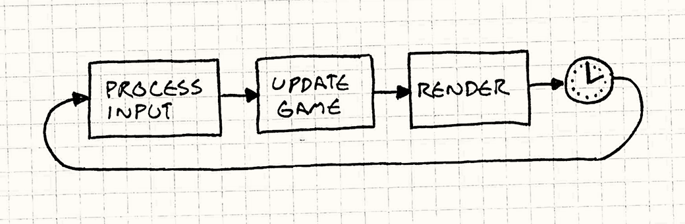
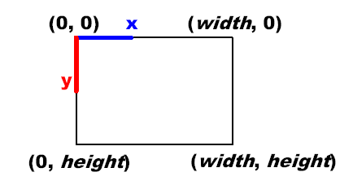
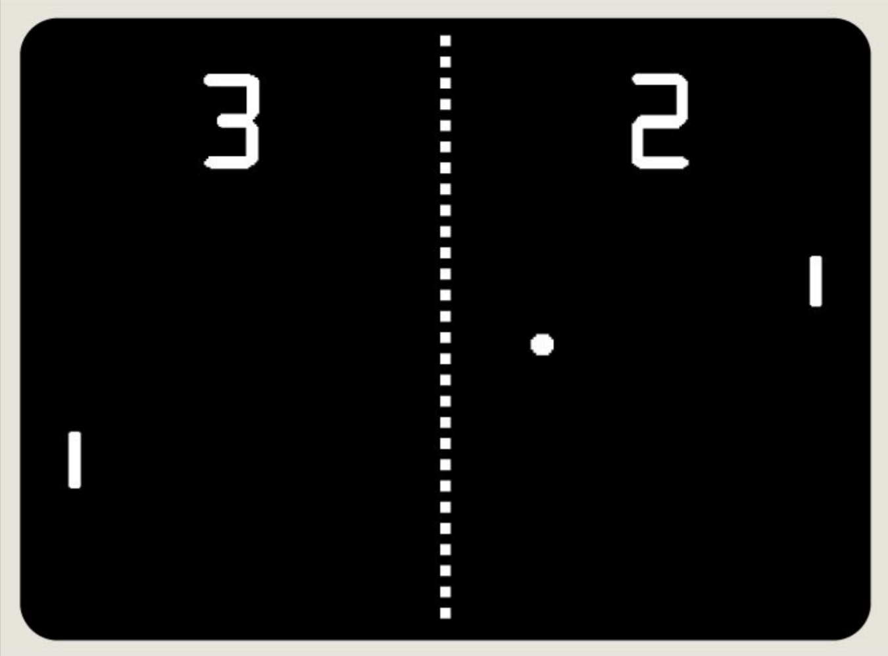

Lecture 0: Pong
Today’s Topics
- Lua
- This is the programming language that we’ll be using predominantly throughout the course. Lua is a dynamic scripting language similar to Python and JavaScript.
- LÖVE2D
- The primary game framework we’ll be using throughout the course. It works hand in hand with Lua, and you can find documentation for it at love2d.org/wiki/Main_Page.
- Drawing Shapes and Text
- Two of the most basic principles of game development, being able to draw shapes and text is what will allow us to render our game on a screen.
- DeltaTime and Velocity
- DeltaTime, arguably one of the most important variables that we keep track of in any game framework, is the time elapsed since the last frame of execution in our game. LÖVE2D measures DeltaTime in terms of seconds, so we’ll see how this concept relates to velocity.
- Game State
- Every game is composed of a series of states (e.g., the title screen state, gameplay state, menu state, etc.), so it will be important to understand this concept since we’ll want different rendering logic and update logic for each state.
- Basic OOP (Object-Oriented Programming)
- The use of Object-Oriented Programming will allow us to encapsulate our data and game objects such that each object in our game will be able to keep track of all the information that is relevant to it, as well as have access to specific functions that are unique to it.
- Box Collision (Hitboxes)
- Understanding the concept of box collision will be necessary in order to bring Pong to life, since we’ll need to be able to “bounce” a ball back and forth between two paddles. The ball and paddles will be rectangular, so we’ll focus on “Axis-Aligned Bounding Boxes,” which will allow us to calculate collisions more simply.
- Sound Effects (with bfxr)
- Lastly, we’ll learn how to polish up our game with sound effects in order to make it more enticing and immersive.
Installing LÖVE2D
- Before you start following along with the rest of the lecture, be sure to have LÖVE2D installed on your machine, which you can do through the following link:
- It’s available for all major operating systems (Windows, Mac, Linux). If you’re in need of some tips for how to get it started running on your machine, check out this link:
Downloading Demo Code
- Next, be sure to download the code for today’s lecture, which you can find at:
- This should make it easier to follow along without having to focus on matching every keystroke in real time.
What is Lua?
- “Lua” is Portuguese for “moon.” It was invented in 1993 in Brazil, and is intended for embedded use in larger applications. Since its invention, it has become very popular in the video game industry.
- It is a flexible, lightweight scripting language focused around “tables,” which are similar to dictionaries in Python and objects in JavaScript.
- Lua is excellent for storing data as well as code (it benefits from a data-driven design).
What is LÖVE2D?
- LÖVE2D is a fast 2D game development framework written in C++ that uses Lua as its scripting language.
- It contains modules for graphics, keyboard input, math, audio, windowing, physics, and much more.
- Fortunately, it is completely free and portable to all major desktops and Android/iOS.
- It’s also great for prototyping if you don’t plan on using LÖVE2D in the final version of your game!
What is a game loop?
- A game, fundamentally, is an infinite loop, like a
while(true)or awhile(1). During every iteration of that loop, we’re repeatedly performing the following set of steps:- First, we’re processing input. That is to say, we’re constantly checking: has the user pressed a key on the keyboard, moved the joystick, moved/clicked the mouse, etc.?
- Second, we need to respond to that input from the previous step by updating anything in the game that depends on that input (i.e., tracking movement, detecting collisions, etc.).
- Third, we need to re-render anything that was updated in the previous step, so that the user can see visually on the screen that the game has changed and feel a sense of interactivity.

Photo taken from gameprogrammingpatterns.com/game-loop.html, where you can read more about game loops.
2D Coordinate System
- In the context of 2D games, the most fundamental way of looking at the world is by using the 2D coordinate system.
-
Slightly different from the traditional coordinate system you might’ve used in math class, the 2D coordinate system we’re referring to here is a system in which objects have an X and Y coordinate (X, Y) and are drawn accordingly, with (0,0) being the top-left of the system. This means positive directions moving down and to the right, while negative directions move up and to the left.

Photo taken from rbwhitaker.wdfiles.com/local--files/monogame-introduction-to-2d-graphics/2DCoordinateSystem.png.
{kind=link}
Today’s Goal
-
We are aiming to recreate “Pong,” a simple 2 player game in which one player has a paddle on the left side of the screen, the other player has a paddle on the right side of the screen, and the first player to score 10 times on their opponent wins. A player scores by getting the ball past the opponent’s paddle and into their “goal” (i.e., the edge of the screen).

Lecture’s Scope
- First off, we’ll want to draw shapes to the screen (e.g., paddles and ball) so that the user can see the game.
- Next, we’ll want to control the 2D position of the paddles based on input, and implement collision detection between the paddles and ball so that each player can deflect the ball back toward their opponent.
- We’ll also need to implement collision detection between the ball and screen boundaries to keep the ball within the vertical bounds of the screen and to detect scoring events (outside horizontal bounds)
- At that point, we’ll want to add sound effects for when the ball hits paddles and walls, and for when a point is scored.
- Lastly, we’ll display the score on the screen so that the players don’t have to remember it during the game.
pong-0 (“The Day-0 Update”)
- At this point, you will want to have downloaded the demo code in order to follow along. Be sure to pay attention to the comments in the code!
- pong-0 simply prints “Hello Pong!” exactly in the center of the screen. This is not incredibly exciting, but it does showcase how to use LÖVE2D’s most important functions moving forward.
Important Functions
-
love.load()- This function is used for initializing our game state at the very beginning of program execution. Whatever code we put here will be executed once at the very beginning of the program.
-
love.update(dt)- This function is called by LÖVE at each frame of program execution;
dt(i.e., DeltaTime) will be the elapsed time in seconds since the last frame, and we can use this to scale any changes in our game for even behavior across frame rates.
- This function is called by LÖVE at each frame of program execution;
-
love.draw()- This function is also called at each frame by LÖVE. It is called after the update step completes so that we can draw things to the screen once they’ve changed.
- LÖVE2D expects these functions to be implemented in
main.luaand calls them internally; if we don’t define them, it will still function, but our game will be fundamentally incomplete, at least ifupdateordraware missing! We’ll take a look at two more functions below: -
love.graphics.printf(text, x, y, [width], [align])- Versatile print function that can align text left, right, or center on the screen
-
love.window.setMode(width, height, params)- Used to initialize the window’s dimensions and to set parameters like
vsync(vertical sync), whether we’re fullscreen or not, and whether the window is resizeable after startup. We won’t be using this function past this example in favor of thepushvirtual resolution library, which has its own method like this, but it is useful to know if encountered in other code.
- Used to initialize the window’s dimensions and to set parameters like
- Now, with these puzzle pieces in mind, you can see how we’re rendering “Hello Pong!” to the center of the screen:
Important code
- We initialize our game by specifying in the
love.load()function that our 1280x720 game window shouldn’t be fullscreen or resizable, but it should be synced to our monitor’s own refresh rate.WINDOW_WIDTH = 1280 WINDOW_HEIGHT = 720 function love.load() love.window.setMode(WINDOW_WIDTH, WINDOW_HEIGHT, { fullscreen = false, resizable = false, vsync = true }) end - Next, we overwrite
love.draw()so that we can specify the text we’d like to render to the screen, in this case “Hello Pong!”, along with coordinates for where it should be drawn.function love.draw() love.graphics.printf( 'Hello Pong!', 0, WINDOW_HEIGHT / 2 - 6, WINDOW_WIDTH, 'center') end
pong-1 (“The Low-Res Update”)
- pong-1 exhibits the same behavior as pong-0, but with much blurrier text.
Important Functions
-
love.graphics.setDefaultFilter(min, mag)- This function sets the texture scaling filter when minimizing and magnifying textures and fonts; LÖVE’s default is bilinear, which causes blurriness, but for our use cases we will typically want nearest-neighbor filtering (
nearest), which results in perfect pixel upscaling and downscaling, simulating a retro feel.
- This function sets the texture scaling filter when minimizing and magnifying textures and fonts; LÖVE’s default is bilinear, which causes blurriness, but for our use cases we will typically want nearest-neighbor filtering (
-
love.keypressed(key)- This is a LÖVE2D callback function that executes whenever we press a key, assuming we’ve implemented this in
main.lua, in the same vein aslove.load(),love.update(dt), andlove.draw(). It’ll allow us to receive input from the keyboard for our game.
- This is a LÖVE2D callback function that executes whenever we press a key, assuming we’ve implemented this in
-
love.event.quit()- This is a simple function that terminates the application upon execution.
Important Code
- When you open pong-1, you’ll notice that we’ve begun using the
pushlibrary we referred to earlier. You can “import” other files in yourmain.luafile with therequirekeyword given that they are in the same directory. - In addition, we’ve also added two new variables to the code:
push = require 'push' WINDOW_WIDTH = 1280 WINDOW_HEIGHT = 720 VIRTUAL_WIDTH = 432 VIRTUAL_HEIGHT = 243This will allow us to think of our game in more low-res terms, by using the
pushlibrary to treat our game as if it were on a 432x243 window, while actually rendering it at our desired 1280x720 window. With this change, we can see we’ve updated ourlove.load()function accordingly:function love.load() love.graphics.setDefaultFilter('nearest', 'nearest') push:setupScreen(VIRTUAL_WIDTH, VIRTUAL_HEIGHT, WINDOW_WIDTH, WINDOW_HEIGHT, { fullscreen = false, resizable = false, vsync = true }) end - We’ve also added a way to quit the game via user input, by using two of the functions discussed above:
function love.keypressed(key) if key == 'escape' then love.event.quit() end endIncluding this code in
main.luawill ensure that the program is always monitoring whether the user has pressed theescapekey on their keyboard, in which caselove.event.quit()will be called to terminate the program. - Lastly, we’ve made a small tweak to our
love.draw()function so as to integrate thepushlibrary into the code.function love.draw() push:apply('start') love.graphics.printf('Hello Pong!', 0, VIRTUAL_HEIGHT / 2 - 6, VIRTUAL_WIDTH, 'center') push:apply('end') endYou’ll notice that our print statement remains unchanged, but we’ve wrapped it between
push:apply('start')andpush:apply('end')to ensure that its contents will be rendered at our desired virtual resolution. - With these changes, you’ll notice that while we’re still printing “Hello Pong!” to the center of the screen, the text is now magnified and rendered at a lower resolution, despite our window size being the same as before.
pong-2 (“The Rectangle Update”)
- pong-2 produces a more complete, albeit static image of what our Pong program should look like.
Important Functions
-
love.graphics.newFont(path, size)- This function loads a font file into memory at a specific path, setting it to a specific size, and storing it in an object we can use to globally change the currently active font that LÖVE2D is using to render text (functioning like a state machine).
-
love.graphics.setFont(font)- This function sets LÖVE2D’s currently active font (of which there can only be one at a time) to a passed-in
fontobject that we can create usinglove.graphics.newFont, per the above.
- This function sets LÖVE2D’s currently active font (of which there can only be one at a time) to a passed-in
-
love.graphics.clear(r, g, b, a)- This function wipes the entire screen with a color defined by an RGBA set, with each component ranging from 0-255.
-
love.graphics.rectangle(mode, x, y, width, height)- Draws a rectangle onto the screen using whichever our active color is (per
love.graphics.setColor, which we don’t need to use in this particular project since most everything is white, the default LÖVE2D color). Themodeparameter can be set tofillorline, which results in a filled or outlined rectangle, respectively, and the other four parameters are its position and size dimensions. This is the cornerstone drawing function of the entirety of our Pong implementation!
- Draws a rectangle onto the screen using whichever our active color is (per
Important Code
- Alongside our
main.luafile and thepushlibrary, you’ll find that we’ve added a font file to our project. - On that note, you’ll find a small addition to our
love.load()function:smallFont = love.graphics.newFont('font.ttf', 8) love.graphics.setFont(smallFont)This will allow us to create a custom font object (based off the font file we’ve added to our project directory) that we can set as the active font in our game.
- The only other changes to the code in this update can be found in the
love.draw()function.love.graphics.clear(40/255, 45/255, 52/255, 255/255) love.graphics.printf('Hello Pong!', 0, 20, VIRTUAL_WIDTH, 'center') love.graphics.rectangle('fill', 10, 30, 5, 20) love.graphics.rectangle('fill', VIRTUAL_WIDTH - 10, VIRTUAL_HEIGHT - 50, 5, 20) love.graphics.rectangle('fill', VIRTUAL_WIDTH / 2 - 2, VIRTUAL_HEIGHT / 2 - 2, 4, 4)As you can see, we are setting the background to a dark color, shifting “Hello Pong!” higher up on the screen, and drawing rectangles for the paddles and the ball. The paddles are positioned on opposing ends of the screen, and the ball in the center.
pong-3 (“The Paddle Update”)
- pong-3 adds interactivity to the Paddles by letting us move them up and down using the
wandskeys for the left Paddle and the up and down keys for the right Paddle.
Important Functions
-
love.keyboard.isDown(key)- This function returns true or false depending on whether the specified key is currently held down; it differs from
love.keypressed(key)in that this can be called arbitrarily and will continuously return true if the key is pressed down, whereaslove.keypressed(key)will only fire its code once every time the key is initially pressed down. However, since we want to be able to move our paddles up and down by holding down the appropriate keys, we need a function to test for longer periods of input, hence the use oflove.keyboard.isDown(key).
- This function returns true or false depending on whether the specified key is currently held down; it differs from
Important Code
- You’ll notice we’ve added a new constant near the top of
main.lua:PADDLE_SPEED = 200This is an arbitrary value that we’ve chosen for our paddle speed. It will be scaled by DeltaTime, so it’ll be multiplied by how much time has passed (in terms of seconds) since the last frame, so that our paddle movement will remain consistent regardless of how quickly or slowly our computer is running.
- You’ll also find some new variables in
love.load():scoreFont = love.graphics.newFont('font.ttf', 32) player1Score = 0 player2Score = 0 player1Y = 30 player2Y = VIRTUAL_HEIGHT - 50In particular, we’ve created a new font object that is of larger size so that we can display each player’s score more visibly on the screen, and allocated two variables for the purpose of scorekeeping. The last two variables will keep track of each paddle’s vertical position, since the paddles will be able to move up and down.
- Next, you’ll see that we’ve finally defined behavior for
love.update():function love.update(dt) if love.keyboard.isDown('w') then player1Y = player1Y + -PADDLE_SPEED * dt elseif love.keyboard.isDown('s') then player1Y = player1Y + PADDLE_SPEED * dt end if love.keyboard.isDown('up') then player2Y = player2Y + -PADDLE_SPEED * dt elseif love.keyboard.isDown('down') then player2Y = player2Y + PADDLE_SPEED * dt end endHere, we’ve implemented a way for each player to move their paddle. Recall that our 2D coordinate system is centered at the top left of the screen. Therefore, in order for each paddle to move upwards, its Y position will need to be multiplied by negative velocity (and vice versa), which might seem counterintuitive at first glance, so be sure to take a moment to look at this carefully.
- Lastly, in
love.draw()you’ll see that we’ve added code for displaying the score on the screen:love.graphics.setFont(scoreFont) love.graphics.print(tostring(player1Score), VIRTUAL_WIDTH / 2 - 50, VIRTUAL_HEIGHT / 3) love.graphics.print(tostring(player2Score), VIRTUAL_WIDTH / 2 + 30, VIRTUAL_HEIGHT / 3)First we set the active font to be the larger of the two we’ve created, and then we display each player’s score on their side of the screen.
pong-4 (“The Ball Update”)
- pong-4 adds motion to the Ball upon the user pressing
enter.
Important Functions
-
math.randomseed(num)- This function “seeds” the random number generator used by Lua (
math.random) with some values such that its randomness is dependent on that supplied value, allowing us to pass in different numbers each playthrough to guarantee non-consistency across different program executions (or uniformity if we want consistent behavior for testing).
- This function “seeds” the random number generator used by Lua (
-
os.time()- This is a Lua function that returns, in seconds, the time since 00:00:00 UTC, January 1, 1970, also known as Unix epoch time (en.wikipedia.ord/wiki/Unix_time)
-
math.random(min, max)- This function returns a random number, dependent on the seeded random number generator, between
minandmax, inclusive.
- This function returns a random number, dependent on the seeded random number generator, between
-
math.min(num1, num2)- Returns the lesser of the two numbers passed in.
-
math.max(num1, num2)- Returns the greater of the two numbers passed in.
Important Code
- You’ll find our first addition to the code at the top of
love.load():math.randomseed(os.time())This seeds the random number generator, using the current time to ensure different random numbers each time our game is run. Beyond that, you’ll see a few new variables near the bottom of
love.load():ballX = VIRTUAL_WIDTH / 2 - 2 ballY = VIRTUAL_HEIGHT / 2 - 2 ballDX = math.random(2) == 1 and 100 or -100 ballDY = math.random(-50, 50) gameState = 'start'ballXandballYwill keep track of the ball position, whileballDXandballDYwill keep track of the ball velocity.gameStatewill serve as a rudimentary “state machine”, such that we’ll cycle it through the different states of our game (start, play, etc.) - In
love.update(), we tweak our code for paddle movement by wrapping it around themath.max()andmath.minfunctions to ensure that the paddles can’t move beyond the edges of the screen: - We also add new code to ensure the ball can only move when we are in the “play” state:
if gameState == 'play' then ballX = ballX + ballDX * dt ballY = ballY + ballDY * dt end - Following this, in
love.keypressed(key), we add functionality to launch the game (thus transitioning from the “start” state to the “play” state) and implement ball movement mechanics:elseif key == 'enter' or key == 'return' then if gameState == 'start' then gameState = 'play' else gameState = 'start' ballX = VIRTUAL_WIDTH / 2 - 2 ballY = VIRTUAL_HEIGHT / 2 - 2 ballDX = math.random(2) == 1 and 100 or -100 ballDY = math.random(-50, 50) * 1.5 end endOnce in the “play state,” we start the ball’s position in the center of the screen and assign it a random starting velocity.
- Lastly, we tweak our
love.draw()function so that we can see the changes fromlove.update()at each frame:if gameState == 'start' then love.graphics.printf('Hello Start State!', 0, 20, VIRTUAL_WIDTH, 'center') else love.graphics.printf('Hello Play State!', 0, 20, VIRTUAL_WIDTH, 'center') end love.graphics.rectangle('fill', 10, player1Y, 5, 20) love.graphics.rectangle('fill', VIRTUAL_WIDTH - 10, player2Y, 5, 20) love.graphics.rectangle('fill', ballX, ballY, 4, 4)The only changes of note are the displaying of different messages depending on the game state, and updating the previous print statements to use the variables dynamically keeping track of position, rather than static values.
pong-5 (“The Class Update”)
- pong-5 behaves exactly like pong-4. The biggest advantage we gain from this update is in the design of our code.
- Open up pong-5 to take a look at how we’ve reorganized the code using classes and objects.
What is a class?
- A class is essentially a container for attributes (i.e., values or fields) and methods (i.e., functions). You can think of it as a blueprint for creating bundles of data and code that are related to each other.
- Ex: A “Car” class can have “attributes” that describe its brand, model, color, miles, and anything else descriptive. Similarly, a “Car” class can also have “methods” that define its behavior, such as “accelerate”, “turn”, “honk”, and more, which take the form of functions.
- Objects are instantiated from these class blueprints, and it’s these concrete objects that are the physical “cars” you see on the road, as opposed to the blueprints that may exist in the factory.
- Our Paddles and Ball are perfect simple use cases for taking some of our code and bundling it together into classes and objects.
- In Lua, class filenames are capitalized by convention, which helps you differentiate between any classes and libraries which you might be including in the same directory as your
main.luafile. - Also note that we
requireour class files inmain.luajust as we do for libraries. Additionally, werequireaclasslibrary which contains helpful functionality for object-oriented programming in Lua.
Important Code
- The main takeaway from this update is that we now have abstracted away from
main.luathe logic relevant to paddle and ball mechanics. These are now in their own classes, so you’ll see a few new files in the project directory.Ball.luacontains all the logic specific to the ball, whilePaddle.luacontains all the logic specific to each paddle. You’ll also findclass.luawhich is what allows us to do this. - This not only gives us greater flexibility moving forward, it also makes our
main.luafile cleaner and more readable.
pong-6 (“The FPS Update”)
- pong-6 adds a title to our screen and displays the FPS of our application on the screen as well
Important Functions
-
love.window.setTitle(title)- This function sets the title of our application window, adding a slight level of polish.
-
love.timer.getFPS()- Returns the current FPS (frames per second) of our application, making it easy to monitor when printed.
Important Code
- Our first addition to the code is in
love.load():love.window.setTitle('Pong')This quick and easy one-liner sets the title of our window.
- Our second addition to the code is at the very bottom of
main.lua. We define a helper function to display our FPS onto the screen:function displayFPS() love.graphics.setFont(smallFont) love.graphics.setColor(0, 255/255, 0, 255/255) love.graphics.print('FPS: ' .. tostring(love.timer.getFPS()), 10, 10) endWe then call this helper function in
love.draw().
pong-7 (“The Collision Update”)
- pong-7 allows for the Ball to bounce off the Paddles and window boundaries.
- Open up pong-7 to take a look at how we’ve incorporated AABB Collision Detection into our Pong program.
AABB Collision Detection
- AABB Collision Detection relies on all colliding entities to have “axis-aligned bounding boxes”, which simply means their collision boxes contain no rotation in our world space, which allows us to use a simple math formula to test for collision:
if rect1.x is not > rect2.x + rect2.width and rect1.x + rect1.width is not < rect2.x and rect1.y is not > rect2.y + rect2.height and rect1.y + rect1.height is not < rect2.y: collision is true else collision is falseEssentially, the formula is merely checking if the two boxes are colliding in any way.
- We can use AABB Collision Detection to detect whether our Ball is colliding with our Paddles and react accordingly.
- We can apply similar logic to detect if the Ball collides with a window boundary.
Important Code
- Notice how we’ve added a
collidesfunction to our Ball class. It uses the above algorithm to determine whether there has been a collision, returningtrueif so andfalseotherwise. - We can use this function in
love.update()to keep track of the ball’s changing position and velocity after each collision with a paddle:if ball:collides(player1) then ball.dx = -ball.dx * 1.03 ball.x = player1.x + 5 if ball.dy < 0 then ball.dy = -math.random(10, 150) else ball.dy = math.random(10, 150) end end if ball:collides(player2) then ball.dx = -ball.dx * 1.03 ball.x = player2.x - 4 if ball.dy < 0 then ball.dy = -math.random(10, 150) else ball.dy = math.random(10, 150) end endTake special note of how we shift the ball away from the paddle first before reversing its direction if we detect a collision in which the ball and paddle’s edges overlap! This prevents an infinite collision loop between the ball and paddle.
- We also implement similar logic for collisions with the window edges:
if ball.y <= 0 then ball.y = 0 ball.dy = -ball.dy end if ball.y >= VIRTUAL_HEIGHT - 4 then ball.y = VIRTUAL_HEIGHT - 4 ball.dy = -ball.dy end
pong-8 (“The Score Update”)
- pong-8 allows us to keep track of the score.
Important Code
- Essentially, all we need to do is increment the score variables for each player whenever the ball collides with their goal boundary:
if ball.x < 0 then servingPlayer = 1 player2Score = player2Score + 1 ball:reset() gameState = 'start' end if ball.x > VIRTUAL_WIDTH then servingPlayer = 2 player1Score = player1Score + 1 ball:reset() gameState = 'start' end
pong-9 (“The Serve Update”)
- pong-9 introduces a new state, “serve”, to our game.
What is a State Machine?
- Currently in our Pong program we’ve only talked about state a little bit. We have our “start” state, which means the game is ready for us to press “enter” so that the ball will start moving, and our “play” state, which means the game is currently underway.
- A state machine concerns itself with monitoring what is the current state and what transitions take place between possible states, such that each individual state is produced by a specific transition and has its own logic.
- In pong-9, we allow a player to “serve” the ball by not having to defend during their first turn.
- We transition from the “play” state to the “serve” state by scoring, and from the “serve” state to the “play” state by pressing
enter. The game begins in the “start” state, and transitions to the serve state by pressingenter.
Important Code
- We can essentially add our new “serve” state by making an additional condition within our
love.update()function:if gameState == 'serve' then ball.dy = math.random(-50, 50) if servingPlayer == 1 then ball.dx = math.random(140, 200) else ball.dx = -math.random(140, 200) end elseif ...The idea is that when a player gets scored on, they should get to serve the ball, so as to not be immediately on defense. We do this by adjusting the ball velocity in the “serve” state based off which player is serving.
pong-10 (“The Victory Update”)
- pong-10 allows a player to win the game.
Important Code
- We introduce a new state: “done”, and then we set a maximum score (in our case, 10). Within
love.update(), we modify our code that checks whether a point has been scored as follows:if ball.x < 0 then servingPlayer = 1 player2Score = player2Score + 1 if player2Score == 10 then winningPlayer = 2 gameState = 'done' else gameState = 'serve' ball:reset() end end if ball.x > VIRTUAL_WIDTH then servingPlayer = 2 player1Score = player1Score + 1 if player1Score == 10 then winningPlayer = 1 gameState = 'done' else gameState = 'serve' ball:reset() end end - When a player reaches the maximum score, the game state transitions to “done” and we produce a victory screen in
love.draw():elseif gameState == 'done' then love.graphics.setFont(largeFont) love.graphics.printf('Player ' .. tostring(winningPlayer) .. ' wins!', 0, 10, VIRTUAL_WIDTH, 'center') love.graphics.setFont(smallFont) love.graphics.printf('Press Enter to restart!', 0, 30, VIRTUAL_WIDTH, 'center') end - Finally, we add some code to
love.keypressed(key)to transition back to the “serve” state and reset the scores in case the player(s) would like to play again.elseif key == 'enter' or key == 'return' then ... elseif gameState == 'done' then gameState = 'serve' ball:reset() player1Score = 0 player2Score = 0 if winningPlayer == 1 then servingPlayer = 2 else servingPlayer = 1 end end end
pong-11 (“The Audio Update”)
- pong-11 adds sound to the game
Important Functions
-
love.audio.newSource(path, [type])- This function creates a LÖVE2D Audio object that we can play back at any point in our program. It can also be given a “type” of “stream” or “static”; streamed assets will be streamed from disk as needed, whereas static assets will be preserved in memory. For larger sound effects and music tracks, streaming is more memory-effective; in our examples, audio assets are static, since they’re so small that they won’t take up much memory at all
- We will use this functionality to play a sound whenever there is a collision.
What is bfxr?
- bfxr is a simple program for generating random sounds, freely-available on all major Operating Systems.
- We will use it to generate all sound effects for our Pong example and most other examples going forward.
- bfxr.net
- We’ve created 3 sound files and stored them in a sub-directory within pong-11.
Important Code
- You’ll notice in
love.load()that we’ve created a table with references to the 3 sound files we’ve added to our project directory:sounds = { ['paddle_hit'] = love.audio.newSource('sounds/paddle_hit.wav', 'static'), ['score'] = love.audio.newSource('sounds/score.wav', 'static'), ['wall_hit'] = love.audio.newSource('sounds/wall_hit.wav', 'static') }In this case, we are storing each sound as a “static” audio file because of how small they are. In the future, if using larger audio files, you might consider storing them as “stream” audio files so as to save on memory.
- You should be able to find throughout the rest of
main.luafunction calls such assounds['paddle_hit']:play()in locations corresponding to playing sound upon paddle collisions, wall collisions, and scoring points.
pong-12 (“The Resize Update”)
- pong-12 allows our Pong program to support resizing the window.
Important Functions
-
love.resize(width, height)- This function is called by LÖVE every time we resize the application; logic should go in here if anything in the game (like a UI) is sized dynamically based on the window size.
push:resize()needs to be called here for our use case so that it can dynamically rescale its internal canvas to fit our new window dimensions.
- This function is called by LÖVE every time we resize the application; logic should go in here if anything in the game (like a UI) is sized dynamically based on the window size.
Important Code
- In order to support resizing the game window, we’ll first need to edit our window initialization in
love.load()such thatresizable = true:push:setupScreen(VIRTUAL_WIDTH, VIRTUAL_HEIGHT, WINDOW_WIDTH, WINDOW_HEIGHT, { fullscreen = false, resizable = true, vsync = true }) - The next step is to overwrite
love.resize()with its analog from thepushlibrary:function love.resize(w, h) push:resize(w, h) endAnd with that, we have a fully functioning game of Pong!